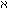

Wherever the word "object" ("thing", "entity", etc.) is rightly used, it is expressed in logical symbolism by the variable name.
For example in the proposition "there are two objects
which . . .", by "( x, y) . . .".
x, y) . . .".
Wherever it is used otherwise, i.e. as a proper concept word, there arise senseless pseudo-propositions.
So one cannot, e.g. say "There are objects" as one says "There are books". Nor "There are 100 objects" or "There are 0 objects".
And it is senseless to speak of the number of all objects.
The same holds of the words "Complex", "Fact", "Function", "Number", etc.
They all signify formal concepts and are presented in logical symbolism by variables, not by functions or classes (as Frege and Russell thought).
Expressions like "1 is a number", "there is only one number nought", and all like them are senseless.
(It is as senseless to say, "there is only one 1" as it would be to say: 2 + 2 is at 3 o'clock equal to 4.)